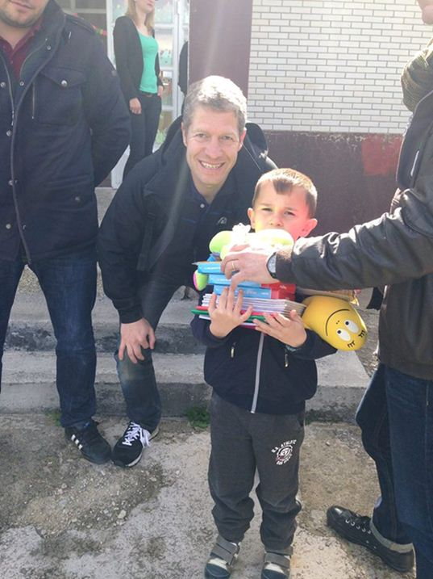
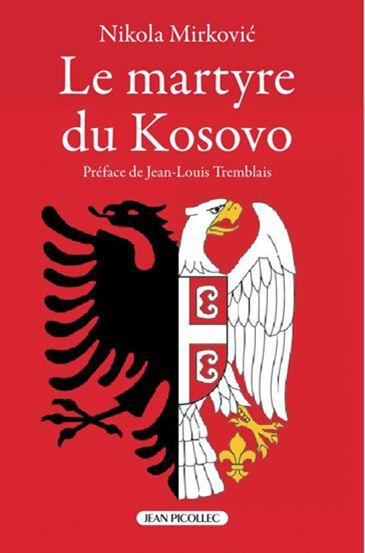
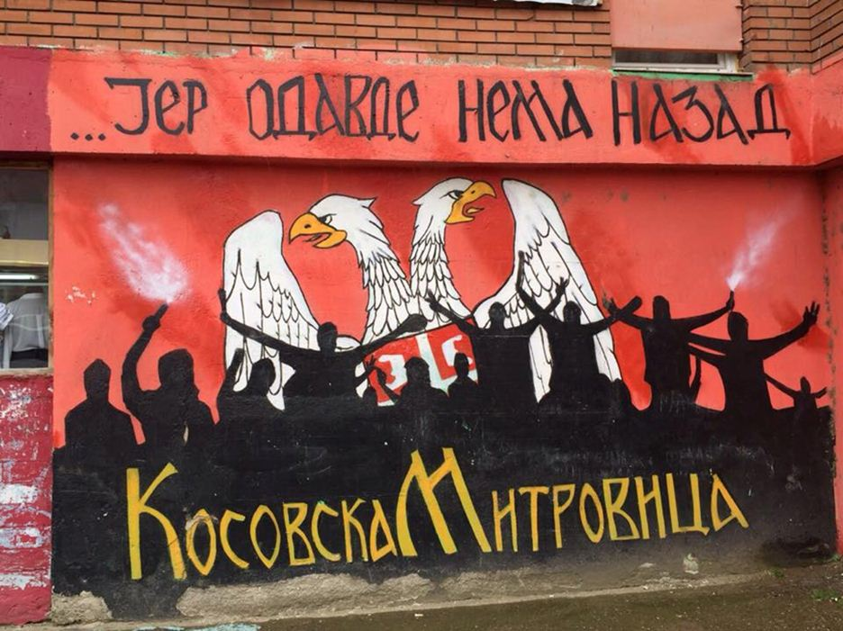
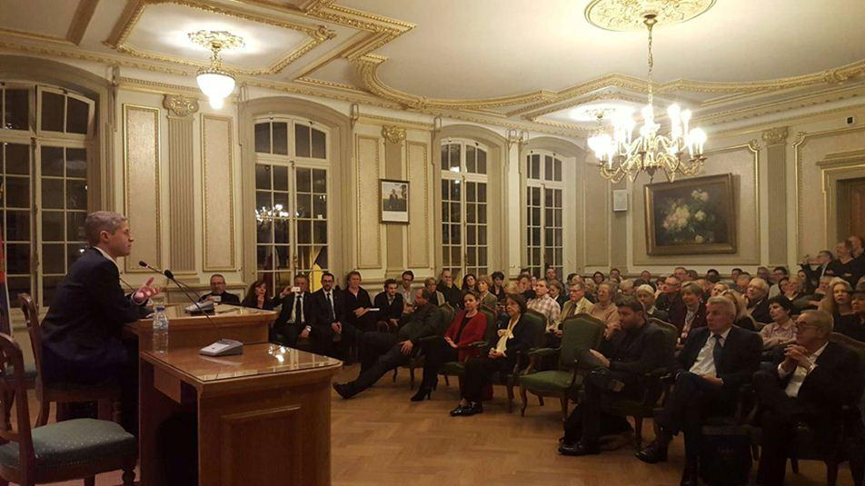
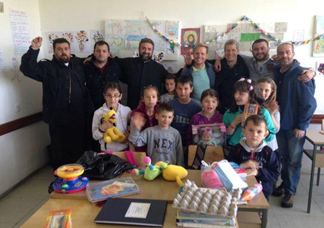
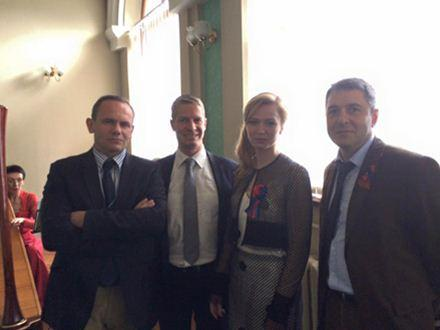
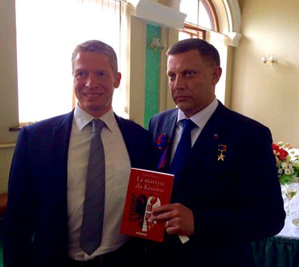

E.S. : Nikola Mirković, présentez-vous s’il-vous plaît.
N.M. : J’ai 45 ans, je suis marié et père de famille et je suis diplômé d’une école de commerce européenne. Je fais de l’humanitaire depuis plus de 10 ans et j’ai décidé de m’engager dans cette voie suite à l’injustice des actions militaires de l’OTAN dans l’Ex-Yougoslavie dans les années 1990. J’ai donc cofondé une association humanitaire, Solidarité Kosovo, avec un ami et nous récoltons aujourd’hui plus d’un million d’euros par an pour aider les Serbes et les minorités du Kosovo et de la Métochie. C’est dans la même logique que je suis également devenu administrateur de l’association humanitaire Vostok France - Solidarité Donbass pour aider les victimes de la guerre dans le Donbass. Dans les deux cas, c’est l’ingérence et le militarisme américains qui sont la cause des crises et de la détresse que nous connaissons et je pense que nous devons agir contre cela.
E.S. : Vous êtes l’auteur du livre « Le martyre du Kosovo ». Pourquoi avez-vous décidé d’écrire ce livre ?
N.M. : J’ai réalisé de très nombreuses conférences pour lever des fonds pour aider les Serbes du Kosovo. A chaque fois j’ai été surpris par le manque de connaissances des personnes qui sont pleine de bonne volonté mais ne comprennent pas toujours le dessous des cartes de la géopolitique et des enjeux réels des conflits modernes. Elles ont été victimes de la propagande médiatique. C’est pour ces raisons que j’ai écrit ce livre : pour que les personnes aient accès à de la véritable information, non truquée et non instrumentalisée avec des faits et documents réels et des preuves objectives. Les personnes n’en reviennent pas quand elles lisent la vérité et quand elles la comparent à ce que disent les medias dominants. Du coup le livre marche bien, on devrait bientôt entamer notre 3è édition et il a déjà été traduit en italien et devrait sortir en espagnol cette année. Nous cherchons même un éditeur en langue russe !
E.S. : Est-ce qu’il y a une résistance des Serbes au Kosovo ? Quelles sont les voies de la résolution de ce conflit ?
N.M. : Oui il y a une résistance serbe au Kosovo car le mot résistance fait partie de l’ADN des Serbes depuis des siècles contre les Ottomans, les nationaux-socialistes allemands, les fascistes italiens. La résistance aujourd’hui n’est pas armée mais elle est déterminée et les Serbes s’organisent afin de survivre. Les Serbes ne représentent plus que 7 % de la population locale. Après avoir tout perdu suite aux bombardements et l’occupation militaire par l’OTAN et la prise de contrôle par les terroristes albanais de l’UCK de leur territoire ils ne baissent pas les bras. Ils reconstruisent leurs églises, leurs maisons, rénovent leurs écoles, renforcent les liens avec les Serbes des autres villages et du reste des Balkans et surtout ils maintiennent vivante leur foi orthodoxe et leurs traditions ancestrales. L’archevêque serbe Irénée a dit récemment : « Le Kosovo restera serbe tant que nous aurons l’âme chevillée au corps ». On ne peut pas tuer un peuple qui a des racines aussi profondes et qui les fait vivre.
E.S. : La Serbie ne risque-t-elle pas de tomber dans un piège en voulant intégrer l’Union européenne ? Est-ce-que la population serbe est favorable à cette intégration ?
N.M. : L’Union européenne est évidemment un piège pour la Serbie car l’Union européenne est en train se sombrer sous la technocratie, le déni de démocratie et les échecs économiques. Elle a voulu rapprocher les peuples d’Europe suite à la catastrophe de la deuxième guerre mondiale ce qui était une très bonne idée mais la réalité est qu’elle a détruit la souveraineté des nations et qu’elle efface petit à petit les identités des peuples d’Europe. Economiquement elle fait tout pour les multinationales qui s’enrichissent alors que les peuples s’appauvrissent. De nombreux pays parlent de quitter l’union et même le Royaume-Uni va organiser un référendum à ce sujet en juin. Le problème pour la Serbie est qu’elle reçoit des menaces incroyables pour rejoindre l’Union. N’oublions pas qu’une partie importante du commerce serbe est actuellement réalisée avec les pays de l’UE ; sans ce commerce la Serbie, qui ne va pas déjà pas très bien, pourrait souffrir. Aussi la Serbie ne voit que les subventions qu’elle recevrait en adhérent et dont elle a besoin pour rénover ces infrastructures mais c’est une vision à court terme. La Croatie et la Slovénie, d’anciennes républiques yougoslaves qui ont déjà rejoint l’UE, après avoir connu des moments d’espoir déchantent aujourd’hui et connaissent une situation économique catastrophique.
Les Serbes sont globalement favorables à cette intégration uniquement pour les facteurs économiques à court terme. Quand on leur demande s’ils préféreraient une alliance avec la Russie ils disent oui très majoritairement mais un tel partenariat, actuellement, manque de garanties économiques que la Serbie pourrait s’en sortir. Certains disent que la Serbie est un pont entre l’Europe de l’ouest et de l’est et que la Serbie pourrait faire partie des deux ensembles. Le problème est que l’UE ne l’entend pas de cette oreille. Derrière l’adhésion à l’UE, Bruxelles pousse la Serbie à abandonner le Kosovo et la Métochie, à rejoindre l’OTAN et la camp atlantiste définitivement. Cela serait un suicide collectif pour les Serbes.
E.S. : Peut-on espérer que les relations de la Serbie avec la Russie vont encore se développer ?
N.M. : Oui tout à fait. Le gouvernement actuel essaye de jouer sur les deux tableaux : UE et Russie et cela exaspère les Atlantistes. N’oublions pas que récemment le président serbe Tomislav Nikolić a été un des seuls présidents présents le 9 mai 2015 pour le défilé de la victoire à Moscou, qu’il y a de nombreux accords bilatéraux entre Moscou et Belgrade, que la Serbie est l'Organisation du Traité de Sécurité Collective (OTSC), que la Serbie a vu d’un très bon œil la création d’une grande base humanitaire à Nis juste au nord du Kosovo ou le refus de la Serbie d’appliquer des sanctions contre la Russie malgré les pressions américaines et européennes. C’est déjà pas mal et il faut espérer que le nouveau gouvernement de Vučić va aller dans une direction de relation encore plus approfondies avec Moscou.
E.S. : Comment pensez-vous que les relations franco-serbes puissent s’améliorer ?
N.M. : Après des années de matraquage médiatique les Français ouvrent les yeux et se rendent compte qu’on leur a menti au sujet des Serbes. Cela favorise considérablement le réchauffement des relations entre les deux peuples. Notre association humanitaire Solidarité Kosovo regroupe chaque année plus de 10 000 Français qui donnent de l’argent pour aider les Serbes du Kosovo à survivre. Tous les Serbes le savent et cela redore le blason de la France qui avait quand même participé aux bombardements illégaux de l’OTAN en 1999. N’oublions pas qu’avec la Russie, l’autre grand frère de la Serbie c’est la France qui a versé le sang pour libérer les Serbes des Austro-Hongrois et qui a grandement participé à l’élaboration de la Yougoslavie royale. Les relations entre nos deux pays remontent au Moyen-Age donc elles ne disparaîtront pas du jour au lendemain. Ce qui est dommage c’est que la France ne profite pas de cette situation privilégiée avec les Serbes et laisse Bruxelles et Washington décider à sa place dans les domaines économiques et politique. C’est une erreur stratégique grave.
 Nikola Mirkovic entouré de la ministre des affaires étrangères de la RPD, Natalia Nikonorova, Philippe Migault et Xavier MoreauE.S. : Est-ce qu’on peut faire un parallèle entre les conflits en Ex-Yougoslavie et au Donbass ?
N.M. : Oui ! La cause de ces conflits est la même et c’est l’ingérence des Etats-Unis dans les affaires politiques d’états souverains. En Yougoslavie les responsables des communautés serbe, musulmane et croate avaient trouvé un accord de paix avant la guerre en mars 1992, c’était le plan Carrington-Cutileiro. Sitôt revenu à Sarajevo le responsable musulman, Alija Izetbegović, a été convoqué par l’ambassadeur américain Warren Zimmerman et à la sortie de cette réunion Izetbegovic a annoncé qu’il retirait sa signature de l’accord.
La suite nous la connaissons : une guerre terrible qui a déchiré la Bosnie-Herzégovine avec les Américains qui ont aidé et financé militairement les Bosniaques et les Croates contre les Serbes. Au Kosovo c’est encore Washington qui a financé et formé les Albanais extrémistes contre les Serbes puis la Maison Blanche a accusé les Serbes et les a bombardés et inventé un nouvel Etat : le Kosovo.
Au Donbass c’est pareil. Victoria Nuland, la sous-secrétaire d’Etat américaine pour les affaires eurasiennes a avoué que les Etats-Unis avaient déboursé 5 milliards de dollars pour changer le régime en Ukraine. Le Maïdan est le fruit de la stratégie américaine pour affaiblir la Russie et pour l’empêcher d’être une puissance européenne. Ce soulèvement violent et anti-démocratique a donné lieu à un coup d’Etat à Kiev avec l’arrivée au pouvoir de néo-nazis très hostiles aux Russophones du pays qui, tout à fait légitimement, ont décidé de prendre leur destin en mains. Le Donbass n’avait pas le choix mais il faut souligner que cette guerre ne serait jamais arrivée sans l’ingérence américaine et la stratégie du conflit pour opposer les habitants de l’Ukraine entre eux.
N.M. : Depuis le début du conflit nous acheminons des vivres au Donbass via notre association française Vostok France - Solidarité Donbass. Cette dernière mission de début mai était ma troisième mission sur place ayant été une fois déjà sur le front en RPL et une fois déjà en RPD. Ces missions sont très importantes pour nous car cela nous permet d’aller directement d’aider la population locale qu’elle soit carrément sur le front ou sur les lignes arrières. Lors de cette dernière mission nous avons apporté beaucoup de nourriture aux plus démunis avec un accent particulier pour les vétérans de la guerre et notamment ceux de la grande guerre patriotique. Nous avons également été sur le front à Spartak, Zaïtsevo et d’autres endroits pour apporter de la nourriture. Pour nous chaque mission doit être plus importante que la précédente et nous préparons déjà la prochaine qui aura lieu début juin où nous irons en RPL et en RPD apporter de l’aide à ceux qui sont dans le besoin. Ces missions nous permettent de surcroît de communiquer en France sur ce qui se passe réellement en Ukraine et dans le Donbass et de dire également aux habitants du Donbass qu’ils ne sont pas seuls et qu’en France de nombreuses personnes pensent à elles et les soutiennent. Le support moral est même parfois plus important que l’aide alimentaire ! Vous pouvez en savoir plus sur nous sur notre site : www.vostokfrance.org.

Nikola Mirkovic avec Alexandre Zakhartchenko, Président de la République Populaire de Donetsk et héros de la guerre du Donbass
E.S. : Comment voyez-vous l’avenir de la République Populaire de Donetsk ?
N.M. : C’est une question qui n’est pas facile mais ce qui est certain c’est que je ne la revoie pas vivre dans le giron de Porochenko et de ses amis. Avec plus de 9 000 morts et un million et demi de déplacés suite à l’intervention militaire de Kiev comment envisager une vie commune à court terme ? C’est triste mais tant que le gouvernement en place composera avec des éléments ouvertement radicalement hostiles aux habitants du Donbass il ne pourra y avoir de règlement pacifique au problème. Il faut espérer que le reste de l’Ukraine se ressaisisse et se débarrasse de ces politiciens qui sèment la haine et veulent la guerre car la guerre en Europe est quelque chose qui nous rappelle à tous de trop mauvais souvenirs. Il n’y a que Washington et ses représentants locaux qui en profitent, c’est tout. C’est pour cela que nous devons tous ensemble nous débarrasser des va-t'en guerre de Kiev. Après quand la paix sera véritablement revenue on peut imaginer différentes hypothèses pour la RPD mais certainement pas une intégration dans l’Ukraine comme avant. Parmi ces hypothèses il y a une fédération de républiques issues de l’ex-Ukraine, la création d’un nouveau pays né de la fusion entre la RPD et la RPL ou même la réunification avec la Russie. C’est aux peuples concernés de décider, pas à Washington.
Partager cette page